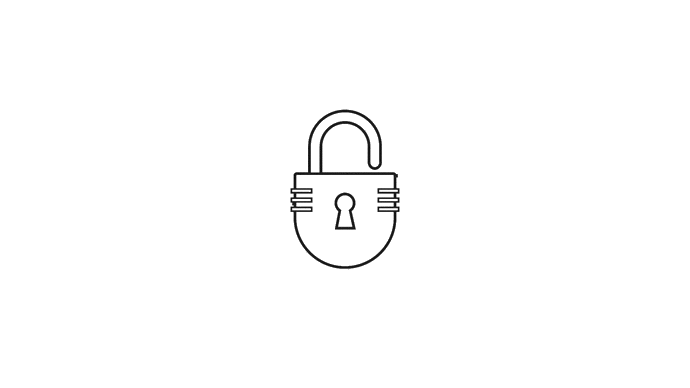

CURSOS EM PROGRESOS
Criar Laboratório de Hacking Virtualizado;
Introdução ao Burp Suite;
50+ Exercícios Práticos de SQL Injection;
Realização de Testes de SQLi Automatizados com SQLmap;
Cuidados e Precauções na Realização de Auditorias de Segurança;
Como Mitigar Vulnerabilidades de SQL Injection;
Introdução a Aplicações Web e Bancos de Dados;
Introdução aos 3 tipos de SQL Injection;
Exploração Avançada de Vulnerabilidades de SQL Injection
Como Testar SQLi em Auditorias de Segurança;
Exemplos Reais de Auditorias;
PROGRESS BAR

Como funciona uma aplicação WEB e sua infraestrutura
Entender como bancos de dados funcionam e como Hackeá-los
Conhecer o Burp Suite e entender o que é uma Proxy
Coletar informações do seu alvo com Nmap, Nikto, Google Hacking e mais...
Efetuar ataques Cross-Site Script (Stored e Reflected)
Efetuar ataques contra Senhas (Autenticação no Sistema)
Efetuar ataques de File Upload, Path Traversal, DoS e outros...
Instalar e configurar o Metasploitable e o Owasp Juice Shop
Utilizar o ZAP Proxy para analisar e efetuar ataques contra Websites
Conhecer detalhes sobre o HTTP, Cookies, Sessões e todo processo de comunicação
Conhecer as falhas WEBs mais reportadas no OWASP Top 10
Efetuar ataques de SQL Injection e suas variações (Error-Based, Union-Based, e outros)
Efetuar ataques em sessões logadas de usuários e conseguir acesso privilegiado
PROGRESS BAR